Chapter 9 Codebook
20 total points
9.1 DGE analysis overview
.md file = 01-DGE_setup_and_overview.md
9.1.1 Review of the dataset
RNA-Seq was performed on HEK293F cells that were either transfected with a MOV10 transgene, or siRNA to knock down Mov10 expression, or non-specific (irrelevant) siRNA. This resulted in 3 conditions Mov10 oe (over expression), Mov10 kd (knock down) and Irrelevant kd, respectively. The number of replicates is as shown below.

Using these data, we will evaluate transcriptional patterns associated with perturbation of MOV10 expression. Please note that the irrelevant siRNA will be treated as our control condition.
Our questions: * What patterns of expression can we identify with the loss or gain of MOV10? * Are there any genes shared between the two conditions?
9.1.2 Setting up
9.1.2.1 Loading libraries
### Setup: Use BiocManager::install if you haven't already installed these libraries
###
### BiocManager::install(c("tidyverse","RColorBrewer","DESeq2","pheatmap","ggplot2","ggrepel"))
### Bioconductor and CRAN libraries used
library(tidyverse)
library(RColorBrewer)
library(DESeq2)
library(pheatmap)
library(ggplot2)
library(ggrepel)9.1.2.2 Loading data
## Load in data
data <- read.delim("data/Mov10_full_counts.txt", row.names=1)
meta <- read.delim("meta/Mov10_full_meta.txt", row.names=1)Use class() to inspect our data and make sure we are working with data frames:
## [1] "data.frame"## [1] "data.frame"9.1.2.3 Viewing data
| sampletype | MOVexpr | |
|---|---|---|
| Irrel_kd_1 | control | normal |
| Irrel_kd_2 | control | normal |
| Irrel_kd_3 | control | normal |
| Mov10_kd_2 | MOV10_knockdown | low |
| Mov10_kd_3 | MOV10_knockdown | low |
| Mov10_oe_1 | MOV10_overexpression | high |
| Mov10_kd_2 | Mov10_kd_3 | Mov10_oe_1 | Mov10_oe_2 | Mov10_oe_3 | |
|---|---|---|---|---|---|
| 1/2-SBSRNA4 | 57 | 41 | 64 | 55 | 38 |
| A1BG | 71 | 40 | 100 | 81 | 41 |
| A1BG-AS1 | 256 | 177 | 220 | 189 | 107 |
| A1CF | 0 | 1 | 1 | 0 | 0 |
| A2LD1 | 146 | 81 | 138 | 125 | 52 |
| A2M | 10 | 9 | 2 | 5 | 2 |
9.1.3 DGE analysis workflow
9.1.3.1 RNA-seq count distribution
To determine the appropriate statistical model, we need information about the distribution of counts. To get an idea about how RNA-seq counts are distributed, let’s plot the counts for a single sample, ‘Mov10_oe_1’:
ggplot(data) +
geom_histogram(aes(x = Mov10_oe_1), stat = "bin", bins = 200) +
xlab("Raw expression counts") +
ylab("Number of genes")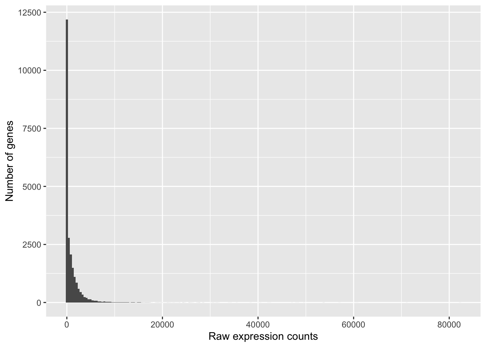
If we zoom in close to zero, we can see a large number of genes with counts of zero:
ggplot(data) +
geom_histogram(aes(x = Mov10_oe_1), stat = "bin", bins = 200) +
xlim(-5, 500) +
xlab("Raw expression counts") +
ylab("Number of genes")## Warning: Removed 9121 rows containing non-finite outside the scale range
## (`stat_bin()`).## Warning: Removed 2 rows containing missing values or values outside the scale range
## (`geom_bar()`).
These images illustrate some common features of RNA-seq count data, including a low number of counts associated with a large proportion of genes, and a long right tail due to the lack of any upper limit for expression.
9.1.3.2 Modeling count data
By plotting the mean versus the variance of our data we should be able to see that the variance > mean and therefore it does not fit the Poisson distribution and is better suited to the Negative Binomial (NB) model.
Run the following code to plot the mean versus variance for the ‘Mov10 overexpression’ replicates:
# apply applies a function to the margins of a matrix
# apply(X, MARGIN, FUN)
# where X is a matrix
# to apply a function to each row of a matrix, use MARGIN = 1
# to apply a function to each column of a matrix, use MARGIN = 2
# FUN can be any function
mean_counts <- apply(data[, 3:5], 1, mean)
variance_counts <- apply(data[, 3:5], 1, var)
# for ggplot we need the data to be in a data.frame
df <- data.frame(mean_counts, variance_counts)
ggplot(df) +
geom_point(aes(x=mean_counts, y=variance_counts)) +
geom_line(aes(x=mean_counts, y=mean_counts, color="red")) +
scale_y_log10() +
scale_x_log10()## Warning in scale_y_log10(): log-10 transformation introduced infinite values.## Warning in scale_x_log10(): log-10 transformation introduced infinite values.## Warning in scale_y_log10(): log-10 transformation introduced infinite values.## Warning in scale_x_log10(): log-10 transformation introduced infinite values.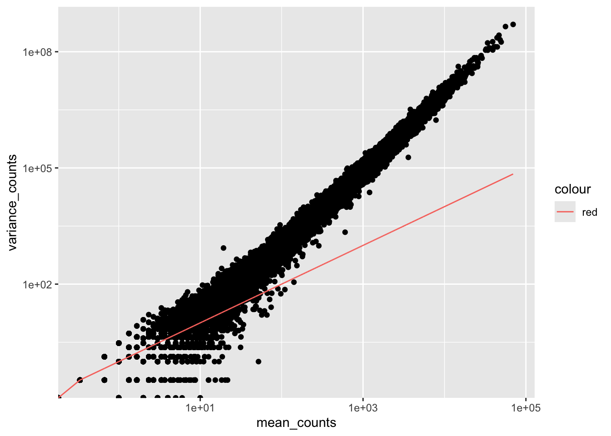
Note that in the above figure, the variance across replicates tends to be greater than the mean (slope > 1, red line), especially for genes with large mean expression levels. This is a good indication that our data do not fit the Poisson distribution and we need to account for this increase in variance using the Negative Binomial model.
9.2 Count normalization
.md file = 02-DGE_count_normalization.md
9.2.1 Normalization
The steps fpr DESeq2 median of ratios method:
calculate the geometric mean of each row in the count matrix
divide each row by the geometric mean for that row
take the median value for each column – these are your size factors, one for each sample
divide each sample by its size factor
Normalized Counts
Exercise
Determine the normalized counts for your gene of interest, PD1, given the raw counts and size factors below.
NOTE: You will need to run the code below to generate the raw counts dataframe (PD1) and the size factor vector (size_factors), then use these objects to determine the normalized counts values:
# Raw counts for PD1
PD1 <- c(21, 58, 17, 97, 83, 10)
names(PD1) <- paste0("Sample", 1:6)
PD1 <- data.frame(PD1)
PD1 <- t(PD1)
# Size factors for each sample
size_factors <- c(1.32, 0.70, 1.04, 1.27, 1.11, 0.85)Normalized counts:
9.2.2 Count normalization of Mov10 dataset
9.2.2.1 1. Match the metadata and counts data
## [1] TRUE## [1] FALSEThe colnames of our data don’t match the rownames of our metadata so we need to reorder them. We can use the match function:
idx <- match(rownames(meta),colnames(data))
data <- data[,idx]
all(colnames(data) == rownames(meta))## [1] TRUEExercise points = +2
Suppose we had sample names matching in the counts matrix and metadata file, but they were out of order. Write the line(s) of code required to create a new matrix with columns ordered such that they were identical to the row names of the metadata.
9.2.2.2 2. Create DESEq2 object
## Create DESeq2Dataset object
dds <- DESeqDataSetFromMatrix(countData = data, colData = meta, design = ~ sampletype)## Warning in DESeqDataSet(se, design = design, ignoreRank): some variables in design
## formula are characters, converting to factorsYou can use DESeq-specific functions to access the different slots and retrieve information, if you wish. For example, suppose we wanted the original count matrix we would use counts():
## Irrel_kd_1 Irrel_kd_2 Irrel_kd_3 Mov10_kd_2 Mov10_kd_3
## 1/2-SBSRNA4 45 31 39 57 41
## A1BG 77 58 40 71 40
## A1BG-AS1 213 172 126 256 177
## A1CF 0 0 0 0 1
## A2LD1 91 80 50 146 81
## A2M 9 8 4 10 9## DataFrame with 8 rows and 2 columns
## sampletype MOVexpr
## <factor> <character>
## Irrel_kd_1 control normal
## Irrel_kd_2 control normal
## Irrel_kd_3 control normal
## Mov10_kd_2 MOV10_knockdown low
## Mov10_kd_3 MOV10_knockdown low
## Mov10_oe_1 MOV10_overexpression high
## Mov10_oe_2 MOV10_overexpression high
## Mov10_oe_3 MOV10_overexpression high## [1] control control control
## [4] MOV10_knockdown MOV10_knockdown MOV10_overexpression
## [7] MOV10_overexpression MOV10_overexpression
## Levels: control MOV10_knockdown MOV10_overexpression## [1] "control" "MOV10_knockdown" "MOV10_overexpression"As we go through the workflow we will use the relevant functions to check what information gets stored inside our object. We can also run:
## [1] "design" "dispersionFunction" "rowRanges"
## [4] "colData" "assays" "NAMES"
## [7] "elementMetadata" "metadata"9.2.2.3 3. Generate the Mov10 normalized counts
The next step is to normalize the count data in order to be able to make fair gene comparisons between samples.

To perform the median of ratios method of normalization, DESeq2 has a single estimateSizeFactors() function that will generate size factors for us. We will use the function in the example below, but in a typical RNA-seq analysis this step is automatically performed by the DESeq() function, which we will see later.
By assigning the results back to the dds object we are filling in the slots of the DESeqDataSet object with the appropriate information. We can take a look at the normalization factor applied to each sample using:
## Irrel_kd_1 Irrel_kd_2 Irrel_kd_3 Mov10_kd_2 Mov10_kd_3 Mov10_oe_1 Mov10_oe_2
## 1.1224020 0.9625632 0.7477715 1.5646728 0.9351760 1.2016082 1.1205912
## Mov10_oe_3
## 0.6534987Now, to retrieve the normalized counts matrix from dds, we use the counts() function and add the argument normalized=TRUE.
We can save this normalized data matrix to file for later use:
9.3 DGE QC analysis
.md file = 03-DGE_QC_analysis.md
The next step in the DESeq2 workflow is QC, which includes sample-level and gene-level steps to perform QC checks on the count data to help us ensure that the samples/replicates look good.

9.3.1 Sample-level QC
When using these unsupervised clustering methods, log2-transformation of the normalized counts improves the distances/clustering for visualization. DESeq2 uses a regularized log transform (rlog) of the normalized counts for sample-level QC as it moderates the variance across the mean, improving the clustering.
9.3.2 Mov10 quality assessment and exploratory analysis
9.3.2.1 Transform normalized counts using the rlog transformation
To improve the distances/clustering for the PCA and heirarchical clustering visualization methods, we need to moderate the variance across the mean by applying the rlog transformation to the normalized counts.
The rlog transformation of the normalized counts is only necessary for these visualization methods during this quality assessment. We will not be using these tranformed counts downstream:
We use this object to plot the PCA and heirarchical clustering figures for quality assessment.
9.3.2.2 Principal components analysis (PCA)
Principal Component Analysis (PCA) is a technique used to emphasize variation and bring out strong patterns in a dataset (dimensionality reduction). The take home message for our purposes is that if two samples have similar levels of expression for the genes that contribute significantly to the variation represented by PC1, they will be plotted close together on the PC1 axis. Therefore, we would expect that biological replicates to have similar scores (since the same genes are changing) and cluster together on PC1 and/or PC2, and the samples from different treatment groups to have different score. This is easiest to understand by visualizing example PCA plots.
Exercise points = +8
The figure below was generated from a time course experiment with sample groups ‘Ctrl’ and ‘Sci’ and the following timepoints: 0h, 2h, 8h, and 16h.

Determine the sources explaining the variation represented by PC1 and PC2. points = +1
- Ans:
Do the sample groups separate well? points = +1
- Ans:
Do the replicates cluster together for each sample group? points = +1
- Ans:
Are there any outliers in the data? points = +2
- Ans:
Should we have any other concerns regarding the samples in the dataset?
- Ans:
## using ntop=500 top features by variance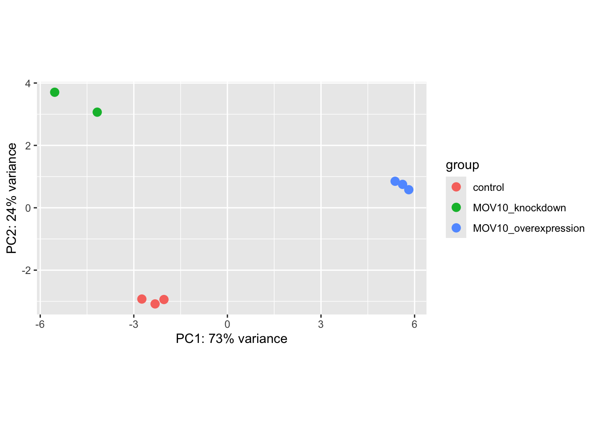
What does this plot tell you about the similarity of samples? points = +1
- Ans:
Does it fit the expectation from the experimental design? points = +1
- Ans:
By default the function uses the top 500 most variable genes. You can change this by adding the ntop argument and specifying how many genes you want to use to draw the plot.
9.3.2.3 Hierarchical Clustering
Similar to PCA, hierarchical clustering is another, complementary method for identifying strong patterns in a dataset and potential outliers. The heatmap displays the correlation of gene expression for all pairwise combinations of samples in the dataset. Since the majority of genes are not differentially expressed, samples generally have high correlations with each other (values higher than 0.80). Samples below 0.80 may indicate an outlier in your data and/or sample contamination.
The heatmap displays the correlation of gene expression for all pairwise combinations of samples in the dataset. Since the majority of genes are not differentially expressed, samples generally have high correlations with each other (values higher than 0.80). Samples below 0.80 may indicate an outlier in your data and/or sample contamination. We expect to see samples clustered similar to the groupings observed in a PCA plot.
We will be using the pheatmap() function from the pheatmap package for heatmaps. This function requires a matrix/dataframe of numeric values as input, and so the first thing we need to is retrieve that information from the rld object:
## [1] "DESeqTransform"
## attr(,"package")
## [1] "DESeq2"## [1] "rowRanges" "colData" "assays" "NAMES"
## [5] "elementMetadata" "metadata"### we can extract the rlog matrix from the object using the `assay` function:
###
rld_mat <- assay(rld)Then we need to compute the pairwise correlation values for samples. We can do this using the cor() function:
### Compute pairwise correlation values
rld_cor <- cor(rld_mat) ## cor() is a base R function
head(rld_cor[,1:5]) ## check the output of cor(), make note of the rownames and colnames## Irrel_kd_1 Irrel_kd_2 Irrel_kd_3 Mov10_kd_2 Mov10_kd_3
## Irrel_kd_1 1.0000000 0.9999614 0.9999532 0.9997202 0.9997748
## Irrel_kd_2 0.9999614 1.0000000 0.9999544 0.9996918 0.9997568
## Irrel_kd_3 0.9999532 0.9999544 1.0000000 0.9996816 0.9997574
## Mov10_kd_2 0.9997202 0.9996918 0.9996816 1.0000000 0.9999492
## Mov10_kd_3 0.9997748 0.9997568 0.9997574 0.9999492 1.0000000
## Mov10_oe_1 0.9996700 0.9996984 0.9997067 0.9994868 0.9996154## [1] 0.9993869And now to plot the correlation values as a heatmap:
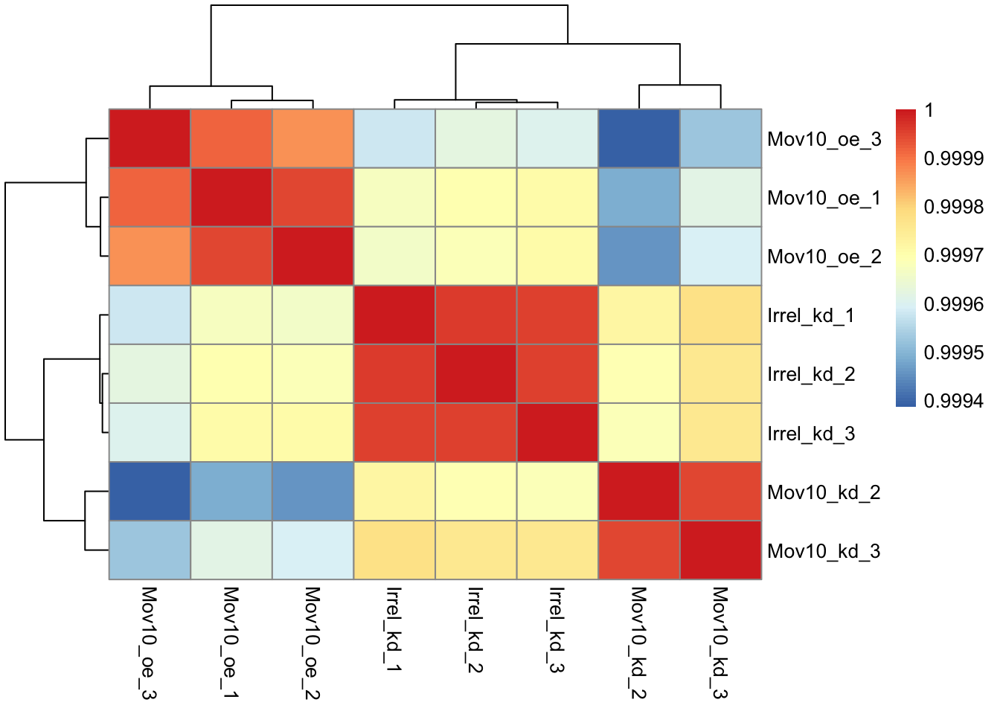
Exercise The pheatmap function has a number of different arguments that we can alter from default values to enhance the aesthetics of the plot. If you are curious and want to explore more, try running the code below. How does your plot change? Take a look through the help pages (?pheatmap) and identify what each of the added arguments is contributing to the plot.

heat.colors <- brewer.pal(9, "Blues")
pheatmap(rld_cor, color = heat.colors, border_color="black", fontsize = 10, fontsize_row = 12, show_rownames = T, show_colnames = T)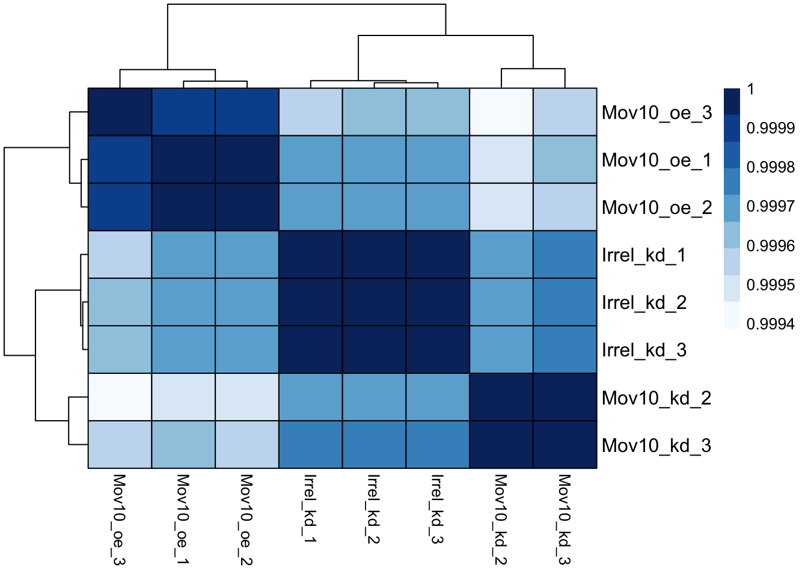
- Ans:
9.4 DEG analysis workflow
.md file = 04_DGE_DESeq2_analysis.md
Differential expression analysis with DESeq2
Differential expression analysis with DESeq2 involves multiple steps as displayed in the flowchart below in blue. Briefly:
DESeq2 will model the raw counts, using normalization factors (size factors) to account for differences in library depth.
estimate the gene-wise dispersion
estimate the expected dispersion
shrink gene-wise dispersion estimates to generate more accurate estimates to model the counts
fit the negative binomial model and perform hypothesis testing using the Wald test

9.4.1 Running DESeq2
9.4.1.1 Design formula
A design formula tells the statistical software the known sources of variation to control for, as well as, the factor of interest to test for during differential expression testing. For example, let’s look at the design formula for our count matrix:
## ~sampletypeAs another example, suppose you have the following metadata:

Exercise points = +5
Suppose you wanted to study the expression differences between the two age groups in the metadata shown above, and major sources of variation were
sexandtreatment, how would the design formula be written?Based on our Mov10 metadata dataframe, which factors could we include in our design formula?
- Ans:
- What would you do if you wanted to include a factor in your design formula that is not in your metadata?
- Ans:
9.4.1.2 MOV10 DE analysis
To get our differential expression results from our raw count data, we only need to run 2 lines of code!
## Create DESeq object
dds <- DESeqDataSetFromMatrix(countData = data, colData = meta, design = ~ sampletype)## Warning in DESeqDataSet(se, design = design, ignoreRank): some variables in design
## formula are characters, converting to factorsThen, to run the actual differential expression analysis, we use a single call to the function DESeq().
## estimating size factors## estimating dispersions## gene-wise dispersion estimates## mean-dispersion relationship## final dispersion estimates## fitting model and testing9.4.2 DESeq2 differential gene expression analysis workflow
Everything from normalization to linear modeling was carried out by the use of a single function!
With the 2 lines of code above, we just completed the workflow for the differential gene expression analysis with DESeq2. The steps in the analysis are output below:

9.4.2.1 Step 1: Estimate size factors
MOV10 DE analysis: examining the size factors
## Irrel_kd_1 Irrel_kd_2 Irrel_kd_3 Mov10_kd_2 Mov10_kd_3 Mov10_oe_1 Mov10_oe_2
## 1.1224020 0.9625632 0.7477715 1.5646728 0.9351760 1.2016082 1.1205912
## Mov10_oe_3
## 0.6534987Take a look at the total number of reads for each sample:
## Irrel_kd_1 Irrel_kd_2 Irrel_kd_3 Mov10_kd_2 Mov10_kd_3 Mov10_oe_1 Mov10_oe_2
## 22687366 19381680 14962754 32826936 19360003 23447317 21713289
## Mov10_oe_3
## 12737889How do the numbers correlate with the size factor?
## [1] 0.9946543- Ans: they are highly correlated
9.4.2.2 Step 2: Estimate gene-wise dispersion**
Dispersion is a measure of spread or variability in the data. DESeq2 uses a specific measure of dispersion (α) related to the mean (μ) and variance of the data: \(Var = μ + α*μ^2\). For genes with moderate to high count values, the square root of dispersion will be equal to the coefficient of variation (σ/ μ). So 0.01 dispersion means 10% variation around the mean expected across biological replicates.
We can make a rough estimate of the gene-wise dispersions using this formula. We know that:
\[\sigma^2 = {\mu + \alpha*}{\mu^2}\]
So the dispersion is equal to: \[\alpha = \frac{\sigma^2 - \mu}{\mu^2}\]
norm.cts <- counts(dds,normalized = TRUE)
mn <- rowMeans(norm.cts)
mn=mn[order(mn)]
mn <- mn[mn!=0]
v <- rowVars(norm.cts)
names(v) = rownames(norm.cts)
v = v[names(mn)]
# For genes with moderate to high count values, the square root of dispersion will be equal to the coefficient of variation (`σ / μ`).
# Let's try a relatively low mean
# to calculate the dispersion, v has to be greater than mu otherwise the disp will be negative
wv = which(v > mn)
var <- v[wv][1]
mu <- mn[wv][1]
disp <- (var - mu)/mu^2
sqrt(var)/mu## ACY3
## 2.828427## ACY3
## 0.5472605So the approximation doesn’t work very well here. Now let’s try a high mean:
var <- v[wv][length(wv)]
mu <- mn[wv][length(wv)]
disp <- (var - mu)/mu^2
# approximation for the square root of the dispersion
sqrt(var)/mu## EEF2
## 0.08296104## EEF2
## 0.08288016Now the approximation is pretty good. The larger the value of the mean, the better the approximation.
What does the DESeq2 dispersion represent?
The DESeq2 dispersion estimates are inversely related to the mean and directly related to variance. Based on this relationship, the dispersion is higher for small mean counts and lower for large mean counts.
How does the dispersion relate to our model?
To accurately model sequencing counts, we need to generate accurate estimates of within-group variation (variation between replicates of the same sample group) for each gene. With only a few (3-6) replicates per group, the estimates of variation for each gene are often unreliable (due to the large differences in dispersion for genes with similar means).
To address this problem, DESeq2 shares information across genes to generate more accurate estimates of variation based on the mean expression level of the gene using a method called ‘shrinkage’. DESeq2 assumes that genes with similar expression levels have similar dispersion.
Estimating the dispersion for each gene separately:
To model the dispersion based on expression level (mean counts of replicates), the dispersion for each gene is estimated using maximum likelihood estimation. In statistics, maximum likelihood estimation (MLE) is a method of estimating the parameters of an assumed probability distribution, given some observed data. This is achieved by maximizing a likelihood function so that, under the assumed statistical model, the observed data is most probable. In other words, given the count values of the replicates, the most likely estimate of dispersion is calculated.
9.4.2.3 Step 3: Fit curve to gene-wise dispersion estimates
The next step in the workflow is to fit a curve to the dispersion estimates for each gene. The idea behind fitting a curve to the data is that different genes will have different scales of biological variability, but, over all genes, there will be a distribution of reasonable estimates of dispersion.
9.4.2.4 Step 4: Shrink gene-wise dispersion estimates toward the values predicted by the curve
The curve allows for more accurate identification of differentially expressed genes when sample sizes are small, and the strength of the shrinkage for each gene depends on:
- how close gene dispersions are from the curve
- sample size (more samples = less shrinkage)
Dispersion plots are a good way to examine your data to ensure it is a good fit for the DESeq2 model.
9.5 Model fitting
.md file = 05_DGE_DESeq2_analysis2
9.5.1 Generalized Linear Model fit for each gene
The final step in the DESeq2 workflow is fitting the Negative Binomial model for each gene and performing differential expression testing.

9.5.2 Shrunken log2 foldchanges (LFC)
To generate more accurate log2 foldchange estimates, DESeq2 allows for the shrinkage of the LFC estimates toward zero when the information for a gene is low, which could include:
- Low counts
- High dispersion values
As with the shrinkage of dispersion estimates, LFC shrinkage uses information from all genes to generate more accurate estimates. Specifically, the distribution of LFC estimates for all genes is used (as a prior) to shrink the LFC estimates of genes with little information or high dispersion toward more likely (lower) LFC estimates.
9.5.3 Hypothesis testing using the Wald test
With DESeq2, the Wald test is commonly used for hypothesis testing when comparing two groups. A Wald test statistic is computed along with a probability that a test statistic at least as extreme as the observed value were selected at random. This probability is called the p-value of the test. If the p-value is small we reject the null hypothesis and state that there is evidence against the null (i.e. the gene is differentially expressed).
9.5.3.1 Creating contrasts
To indicate to DESeq2 the two groups we want to compare, we can use contrasts. Contrasts are then provided to DESeq2 to perform differential expression testing using the Wald test. Contrasts can be provided to DESeq2 a couple of different ways:
Do nothing. Automatically DESeq2 will use the base factor level of the condition of interest as the base for statistical testing. The base level is chosen based on alphabetical order of the levels.
In the results() function you can specify the comparison of interest, and the levels to compare. The level given last is the base level for the comparison. The syntax is given below:
# DO NOT RUN!
contrast <- c("condition", "level_to_compare", "base_level")
results(dds, contrast = contrast, alpha = alpha_threshold)9.5.3.1.1 MOV10 DE analysis: contrasts and Wald tests
We have three sample classes so we can make three possible pairwise comparisons:
- Control vs. Mov10 overexpression
- Control vs. Mov10 knockdown
- Mov10 knockdown vs. Mov10 overexpression
We are really only interested in #1 and #2 from above. Using the design formula we provided ~ sampletype, indicating that this is our main factor of interest.
9.5.3.2 Building the results table
## Define contrasts, extract results table, and shrink the log2 fold changes
contrast_oe <- c("sampletype", "MOV10_overexpression", "control")
res_tableOE_unshrunken <- results(object = dds, contrast=contrast_oe, alpha = 0.05)
# for the coef argument of lfcShrink we have to use coefficient names from the `resultsNames()`
resultsNames(dds)## [1] "Intercept"
## [2] "sampletype_MOV10_knockdown_vs_control"
## [3] "sampletype_MOV10_overexpression_vs_control"res_tableOE <- lfcShrink(dds, coef = "sampletype_MOV10_overexpression_vs_control", res = res_tableOE_unshrunken, type = "apeglm")## using 'apeglm' for LFC shrinkage. If used in published research, please cite:
## Zhu, A., Ibrahim, J.G., Love, M.I. (2018) Heavy-tailed prior distributions for
## sequence count data: removing the noise and preserving large differences.
## Bioinformatics. https://doi.org/10.1093/bioinformatics/bty895# We will save these results for later use in the data directory using the following command:
saveRDS(res_tableOE, file = "data/res_tableOE.rds")The order of the names determines the direction of fold change that is reported. The name provided in the second element is the level that is used as baseline. So for example, if we observe a log2 fold change of -2 this would mean the gene expression is lower in Mov10_oe relative to the control.
9.5.3.3 MA Plot
A plot that can be useful to exploring our results is the MA plot. The MA plot shows the mean of the normalized counts versus the log2 fold changes for all genes tested. The genes that are significantly DE are colored to be easily identified. This is also a great way to illustrate the effect of LFC shrinkage. The DESeq2 package offers a simple function to generate an MA plot.
Let’s start with the unshrunken results:
Viewing the results:
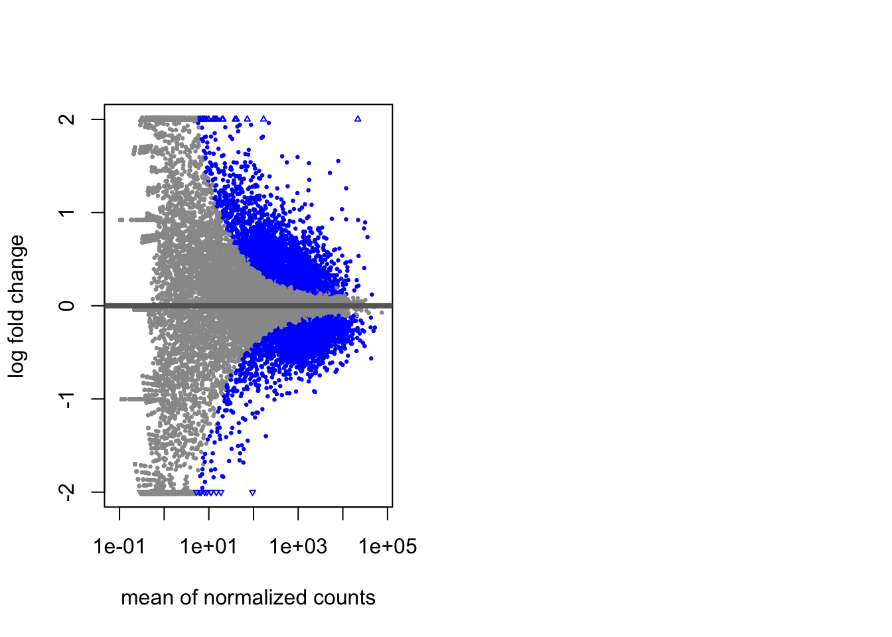
And now the shrunken results:
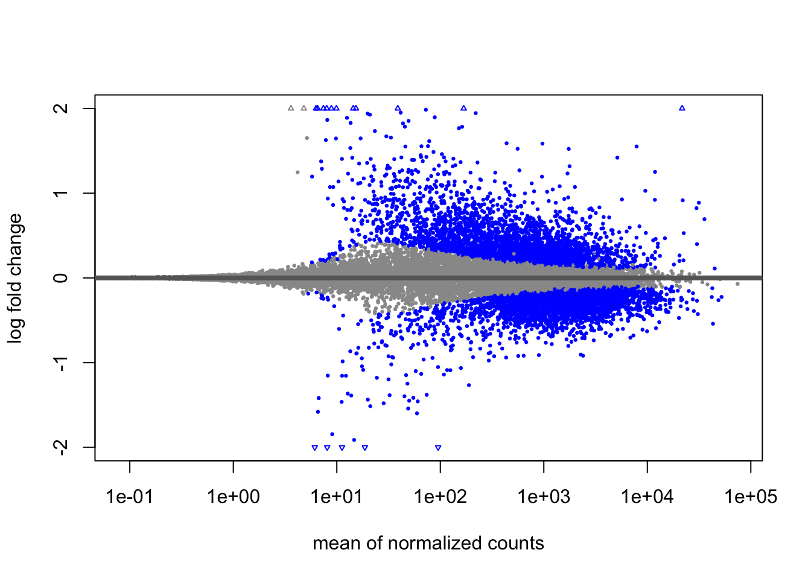
This plot allows us to evaluate the magnitude of fold changes and how they are distributed relative to mean expression.
9.5.3.3.1 MOV10 DE analysis: results exploration
The results table looks very much like a dataframe and in many ways it can be treated like one (i.e when accessing/subsetting data). However, it is important to recognize that it is actually stored in a DESeqResults object. When we start visualizing our data, this information will be helpful.
## [1] "DESeqResults"
## attr(,"package")
## [1] "DESeq2"Let’s go through some of the columns in the results table to get a better idea of what we are looking at. To extract information regarding the meaning of each column we can use mcols():
## DataFrame with 5 rows and 2 columns
## type description
## <character> <character>
## baseMean intermediate mean of normalized c..
## log2FoldChange results log2 fold change (MA..
## lfcSE results posterior SD: sample..
## pvalue results Wald test p-value: s..
## padj results BH adjusted p-values## [1] "mean of normalized counts for all samples"
## [2] "log2 fold change (MAP): sampletype MOV10_overexpression vs control"
## [3] "posterior SD: sampletype MOV10 overexpression vs control"
## [4] "Wald test p-value: sampletype MOV10 overexpression vs control"
## [5] "BH adjusted p-values"| baseMean | log2FoldChange | lfcSE | pvalue | padj | |
|---|---|---|---|---|---|
| 1/2-SBSRNA4 | 45.6520399 | 0.1682023 | 0.2091004 | 0.1610752 | 0.2655661 |
| A1BG | 61.0931017 | 0.1364590 | 0.1767790 | 0.2401909 | 0.3603094 |
| A1BG-AS1 | 175.6658069 | -0.0404612 | 0.1169284 | 0.6789312 | 0.7748342 |
| A1CF | 0.2376919 | 0.0062675 | 0.2100570 | 0.7945932 | NA |
| A2LD1 | 89.6179845 | 0.2901772 | 0.1953954 | 0.0333343 | 0.0741149 |
| A2M | 5.8600841 | -0.0961972 | 0.2335610 | 0.1057823 | 0.1900466 |
If we used the p-value directly from the Wald test with a significance cut-off of p < 0.05, that means there is a 5% chance it is a false positives. Each p-value is the result of a single test (single gene). The more genes we test, the more we inflate the false positive rate. This is the multiple testing problem.
In DESeq2, the p-values attained by the Wald test are corrected for multiple testing using the Benjamini and Hochberg method by default. There are options to use other methods in the results() function. The p-adjusted values should be used to determine significant genes.
9.5.3.3.2 MOV10 DE analysis: Control versus Knockdown
Now that we have results for the overexpression results, let’s do the same for the Control vs. Knockdown samples. Use contrasts in the results() to extract a results table and store that to a variable called res_tableKD.
## Define contrasts, extract results table and shrink log2 fold changes
contrast_kd <- c("sampletype", "MOV10_knockdown", "control")
res_tableKD_unshrunken <- results(object = dds, contrast=contrast_kd, alpha = 0.05)
# for the coef argument in 'lfcShrink' you can also provide a number based on the order in `resultsNames()`
resultsNames(dds)## [1] "Intercept"
## [2] "sampletype_MOV10_knockdown_vs_control"
## [3] "sampletype_MOV10_overexpression_vs_control"## using 'apeglm' for LFC shrinkage. If used in published research, please cite:
## Zhu, A., Ibrahim, J.G., Love, M.I. (2018) Heavy-tailed prior distributions for
## sequence count data: removing the noise and preserving large differences.
## Bioinformatics. https://doi.org/10.1093/bioinformatics/bty895# We will save these results for later use in the data directory using the following command:
saveRDS(res_tableKD, file = "data/res_tableKD.rds")
# just for security, save all our objects in ".RData" again:
save.image()Let’s look at the number of genes below the standard p-adjusted value 0.05:
##
## FALSE TRUE
## 10668 4909##
## FALSE TRUE
## 9066 65119.5.4 Summarizing results
To summarize the results table, a handy function in DESeq2 is summary(). Confusingly it has the same name as the function used to inspect data frames. This function when called with a DESeq results table as input, will summarize the results using the alpha threshold: FDR < 0.05 (padj/FDR is used even though the output says p-value < 0.05).
##
## out of 19748 with nonzero total read count
## adjusted p-value < 0.05
## LFC > 0 (up) : 3103, 16%
## LFC < 0 (down) : 3408, 17%
## outliers [1] : 0, 0%
## low counts [2] : 4171, 21%
## (mean count < 5)
## [1] see 'cooksCutoff' argument of ?results
## [2] see 'independentFiltering' argument of ?results9.5.4.1 Extracting significant differentially expressed genes
What we noticed is that the FDR threshold on it’s own doesn’t appear to be reducing the number of significant genes. With large significant gene lists it can be hard to extract meaningful biological relevance. To help increase stringency, one can also add a fold change threshold.
The lfc.cutoff is set to 0.58; remember that we are working with log2 fold changes so this translates to an actual fold change of 1.5 which is pretty reasonable.
We can easily subset the results table to only include those that are significant using the filter() function, but first we will convert the results table into a tibble:
Now we can subset that table to only keep the significant genes using our pre-defined thresholds:
Exercise
How many genes are differentially expressed in the Overexpression compared to Control, given our criteria specified above? Does this reduce our results? points = +2
- Ans:
Does this reduce our results?
-Ans:
Using the same thresholds as above (padj.cutoff < 0.05 and lfc.cutoff = 0.58), subset res_tableKD to report the number of genes that are up- and down-regulated in Mov10_knockdown compared to control.
res_tableKD_tb <- res_tableKD %>%
data.frame() %>%
rownames_to_column(var="gene") %>%
as_tibble()
sigKD <- res_tableKD_tb %>%
dplyr::filter(padj < padj.cutoff &
abs(log2FoldChange) > lfc.cutoff)
# We'll save this object for use in the homework
saveRDS(sigKD,"data/sigKD.rds")Exercise
How many genes are differentially expressed in the Knockdown compared to Control?
- Ans:
9.6 Visualizing rna-seq results
.md file = 06_DGE_visualizing_results.md
Let’s start by loading a few libraries (if not already loaded):
# load libraries
library(tidyverse)
library(ggplot2)
library(ggrepel)
library(RColorBrewer)
library(DESeq2)
library(pheatmap)
# we may want to load our objects again. here:
# load(".RData")When we are working with large amounts of data it can be useful to display that information graphically to gain more insight.
Let’s create tibble objects from the meta and normalized_counts data frames before we start plotting. This will enable us to use the tidyverse functionality more easily.
Basically, we are taking the rownames and adding them as a field in the tibble/data.frame.
# Create a tibble for meta data
mov10_meta <- meta %>%
rownames_to_column(var="samplename") %>%
as_tibble()
# you might to read in normalized_counts if it is not in your current session:
# normalized_counts <- read.delim("data/normalized_counts.txt", row.names=1)
# then make sure the colnames of normalized_counts are the same as the mov10_meta$sampname
all(mov10_meta$samplename == colnames(normalized_counts))## [1] TRUE# if they aren't we need to reorder them
# mtch = match(mov10_meta$samplename, colnames(normalized_counts))
#
# normalized_counts <- normalized_counts[,mtch]
#
# all(mov10_meta$samplename == colnames(normalized_counts))
# Create a tibble for normalized_counts
normalized_counts <- normalized_counts %>%
data.frame() %>%
rownames_to_column(var="gene") %>%
as_tibble()9.6.1 Plotting signicant DE genes
One way to visualize results would be to simply plot the expression data for a handful of genes. We could do that by picking out specific genes of interest or selecting a range of genes.
9.6.1.1 Using DESeq2 plotCounts() to plot expression of a single gene
To pick out a specific gene of interest to plot, for example Mov10, we can use the plotCounts() from DESeq2:
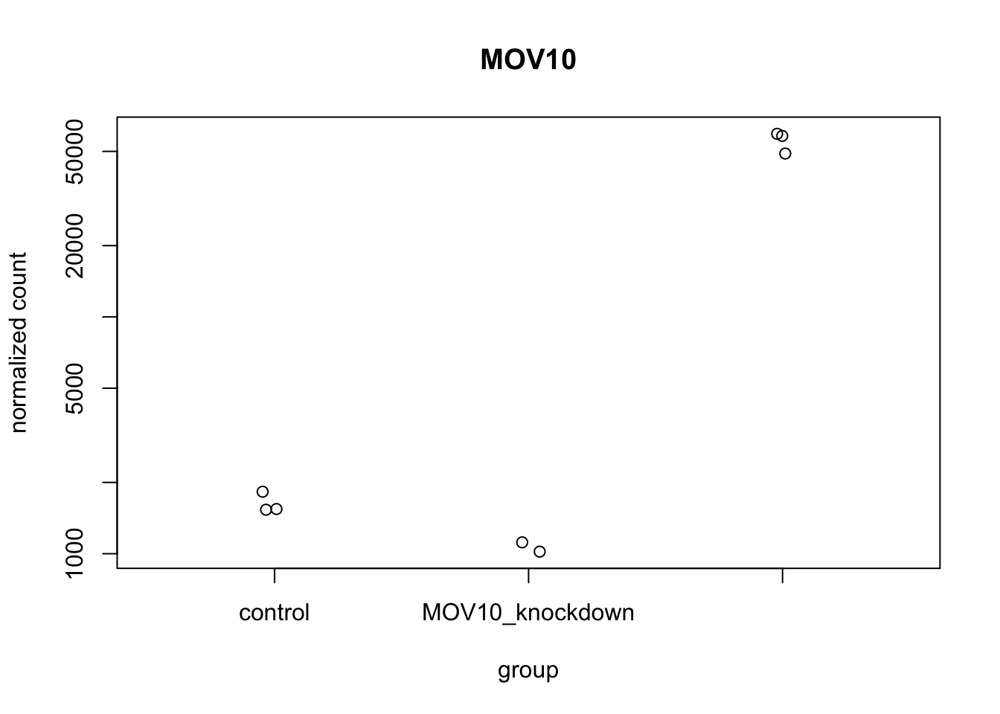
# we can give it some color and filled points:
sampletype = as.factor(mov10_meta$sampletype)
library(RColorBrewer)
display.brewer.all()
col = brewer.pal(8,"Dark2")
palette(col)
plotCounts(dds, gene="MOV10", intgroup="sampletype",col = as.numeric(sampletype),pch = 19) 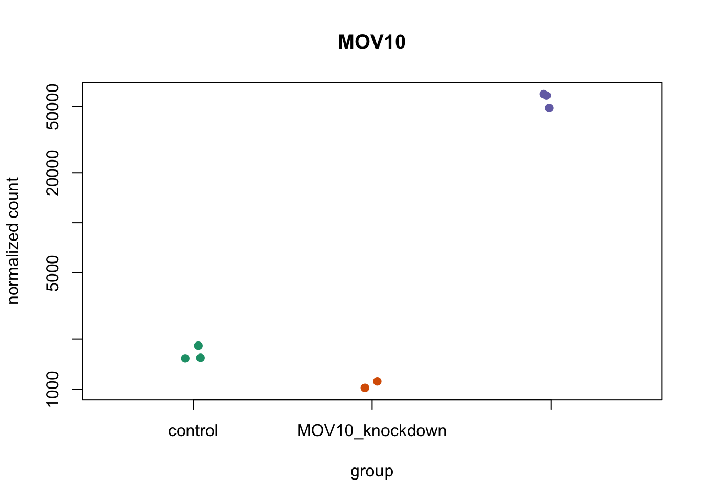
9.6.1.2 Using ggplot2 to plot expression of a single gene
If you wish to change the appearance of this plot, we can save the output of plotCounts() to a variable specifying the returnData=TRUE argument, then use ggplot():
# Save plotcounts to a data frame object
d <- plotCounts(dds, gene="MOV10", intgroup="sampletype", returnData=TRUE)
# Plotting the MOV10 normalized counts, using the samplenames (rownames of d as labels)
ggplot(d, aes(x = sampletype, y = count, color = sampletype)) +
geom_point(position=position_jitter(w = 0.1,h = 0)) +
geom_text_repel(aes(label = rownames(d))) +
theme_bw() +
ggtitle("MOV10") +
theme(plot.title = element_text(hjust = 0.5))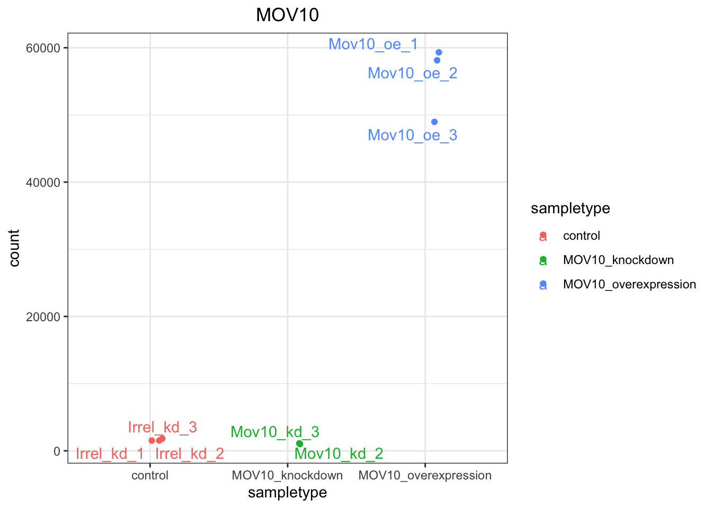
9.6.1.3 Using ggplot2 to plot multiple genes (e.g. top 20)
Often it is helpful to check the expression of multiple genes of interest at the same time. This often first requires some data wrangling.
We are going to plot the normalized count values for the top 20 differentially expressed genes (by padj values).
## Order results by padj values
top20_sigOE_genes <- res_tableOE_tb %>%
arrange(padj) %>%
#Arrange rows by padj values
pull(gene) %>%
#Extract character vector of ordered genes
head(n=20)
#Extract the first 20 genesThen, we can extract the normalized count values for these top 20 genes:
## normalized counts for top 20 significant genes
top20_sigOE_norm <- normalized_counts %>%
dplyr::filter(gene %in% top20_sigOE_genes)Now that we have the normalized counts for each of the top 20 genes for all 8 samples, to plot using ggplot(), we need to pivot_longer top20_sigOE_norm from a wide format to a long format so the counts for all samples will be in a single column to allow us to give ggplot the one column with the values we want it to plot.
The pivot_longer() function in the tidyr package will perform this operation and will output the normalized counts for all genes for Mov10_oe_1 listed in the first 20 rows, followed by the normalized counts for Mov10_oe_2 in the next 20 rows, so on and so forth.

# Pivoting the columns to have normalized counts to a single column
pivoted_top20_sigOE <- top20_sigOE_norm %>%
pivot_longer(colnames(top20_sigOE_norm)[2:9], names_to = "samplename", values_to = "normalized_counts")
## check the column header in the "pivoted" data frame
head(pivoted_top20_sigOE)| gene | samplename | normalized_counts |
|---|---|---|
| ADAMTS1 | Irrel_kd_1 | 6717.735 |
| ADAMTS1 | Irrel_kd_2 | 6454.641 |
| ADAMTS1 | Irrel_kd_3 | 6801.543 |
| ADAMTS1 | Mov10_kd_2 | 6869.168 |
| ADAMTS1 | Mov10_kd_3 | 8730.977 |
| ADAMTS1 | Mov10_oe_1 | 13252.239 |
Now, if we want our counts colored by sample group, then we need to combine the metadata information with the melted normalized counts data into the same data frame for input to ggplot():
# `inner_join(x,y)` will merge 2 data frames by the colname in x that matches a column name in y.
# it is similar to doing a match(pivoted_top20_sigOE$samplename, mov10_meta$samplename) and then adding sampletype and MOV10exr to pivoted_top20_sigOE, but it is more efficient because the columns from mov10_meta are added in a single command.
pivoted_top20_sigOE <- inner_join(mov10_meta, pivoted_top20_sigOE, by = "samplename")Now that we have a data frame in a format that can be utilized by ggplot easily, let’s plot!
## plot using ggplot2
ggplot(pivoted_top20_sigOE) +
geom_point(aes(x = gene, y = normalized_counts, color = sampletype)) +
scale_y_log10() +
xlab("Genes") +
ylab("log10 Normalized Counts") +
ggtitle("Top 20 Significant DE Genes") +
theme_bw() +
theme(axis.text.x = element_text(angle = 45, hjust = 1)) +
theme(plot.title = element_text(hjust = 0.5))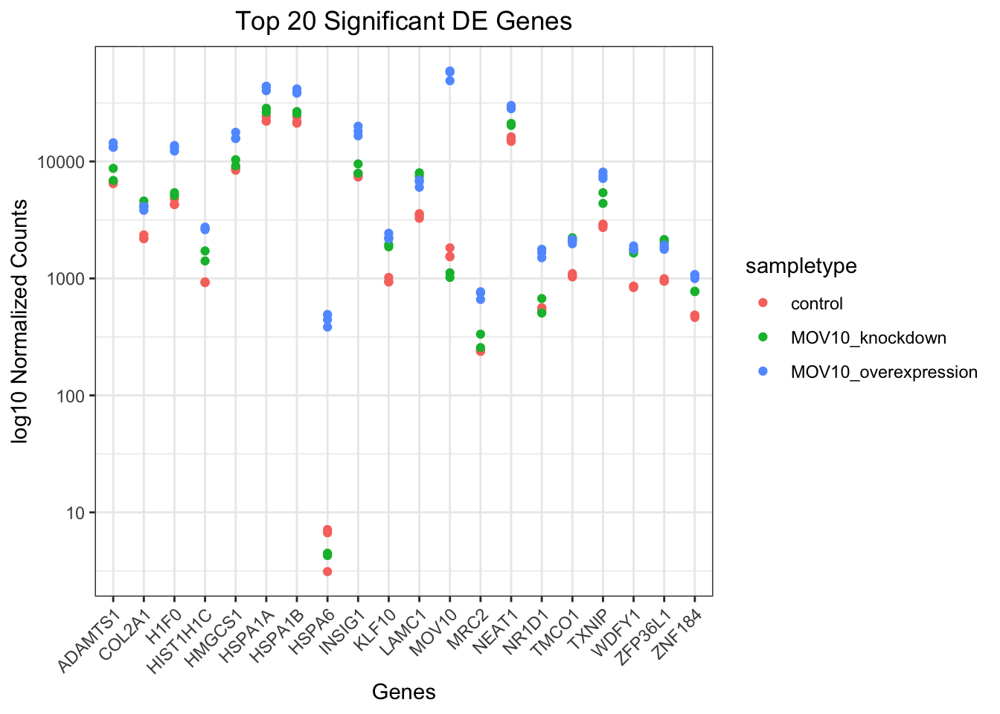
9.6.2 Heatmap
In addition to plotting subsets, we could also extract the normalized values of all the significant genes and plot a heatmap of their expression using pheatmap().
### Extract normalized expression for significant genes from the OE and control samples c(2:4,7:9), and set the gene column (1) to row names
norm_OEsig <- normalized_counts[,c(1,2:4,7:9)] %>%
filter(gene %in% sigOE$gene) %>%
data.frame() %>%
column_to_rownames(var = "gene") Now let’s draw the heatmap using pheatmap:
### Annotate our heatmap (optional)
annotation <- mov10_meta %>%
dplyr::select(samplename, sampletype) %>%
data.frame(row.names = "samplename")
### Set a color palette
heat_colors <- brewer.pal(6, "YlOrRd")
### Run pheatmap
pheatmap(norm_OEsig,
color = heat_colors,
cluster_rows = T,
show_rownames = F,
annotation = annotation,
border_color = NA,
fontsize = 10,
scale = "row",
fontsize_row = 10,
height = 20)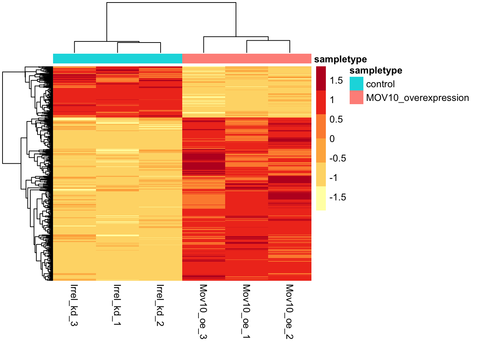
9.6.2.1 Volcano plot
The above plot would be great to look at the expression levels of a good number of genes, but for more of a global view there are other plots we can draw. A commonly used one is a volcano plot; in which you have the log transformed adjusted p-values plotted on the y-axis and log2 fold change values on the x-axis.
To generate a volcano plot (which you have the log transformed adjusted p-values plotted on the y-axis and log2 fold change values on the x-axis), we first need to have a column in our results data indicating whether or not the gene is considered differentially expressed based on p-adjusted values.
## Obtain logical vector where TRUE values denote padj values < 0.05 and fold change > 1.5 in either direction
res_tableOE_tb <- res_tableOE_tb %>%
mutate(threshold_OE = padj < 0.05 & abs(log2FoldChange) >= 0.58)Now we can start plotting:
## Volcano plot
ggplot(res_tableOE_tb) +
geom_point(aes(x = log2FoldChange,
y = -log10(padj), colour = threshold_OE)) +
ggtitle("Mov10 overexpression") +
xlab("log2 fold change") +
ylab("-log10 adjusted p-value") +
#scale_y_continuous(limits = c(0,50)) +
theme(legend.position = "none",
plot.title = element_text(size = rel(1.5), hjust = 0.5),
axis.title = element_text(size = rel(1.25)))## Warning: Removed 7791 rows containing missing values or values outside the scale range
## (`geom_point()`).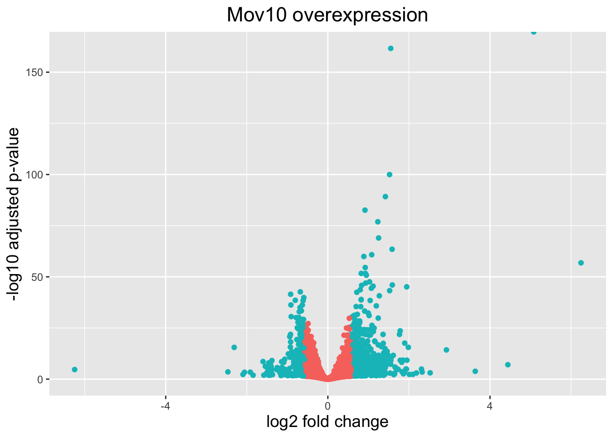
What if we also wanted to know where the top 10 genes (lowest padj) in our DE list are located on this plot? We could label those dots with the gene name on the Volcano plot using geom_text_repel().
First, we need to order the res_tableOE tibble by padj, and add an additional column to it, to include on those gene names we want to use to label the plot.
## Create a column to indicate which genes to label
res_tableOE_tb <- res_tableOE_tb %>% arrange(padj) %>% mutate(genelabels = "")
res_tableOE_tb$genelabels[1:10] <- res_tableOE_tb$gene[1:10]
head(res_tableOE_tb)| gene | baseMean | log2FoldChange | lfcSE | pvalue | padj | threshold_OE | genelabels |
|---|---|---|---|---|---|---|---|
| MOV10 | 21681.800 | 5.0796303 | 0.1101145 | 0 | 0 | TRUE | MOV10 |
| H1F0 | 7881.081 | 1.5517867 | 0.0565777 | 0 | 0 | TRUE | H1F0 |
| HIST1H1C | 1741.383 | 1.5233152 | 0.0706090 | 0 | 0 | TRUE | HIST1H1C |
| TXNIP | 5133.749 | 1.4193814 | 0.0696576 | 0 | 0 | TRUE | TXNIP |
| NEAT1 | 21973.706 | 0.9162823 | 0.0466942 | 0 | 0 | TRUE | NEAT1 |
| KLF10 | 1694.211 | 1.2332114 | 0.0651896 | 0 | 0 | TRUE | KLF10 |
Next, we plot it as before with an additional layer for geom_text_repel() wherein we can specify the column of gene labels we just created.
ggplot(res_tableOE_tb, aes(x = log2FoldChange,
y = -log10(padj))) +
geom_point(aes(colour = threshold_OE)) +
geom_text_repel(aes(label = genelabels)) +
ggtitle("Mov10 overexpression") +
xlab("log2 fold change") +
ylab("-log10 adjusted p-value") +
theme(legend.position = "none",
plot.title = element_text(size = rel(1.5), hjust = 0.5),
axis.title = element_text(size = rel(1.25))) ## Warning: Removed 7791 rows containing missing values or values outside the scale range
## (`geom_point()`).## Warning: Removed 7791 rows containing missing values or values outside the scale range
## (`geom_text_repel()`).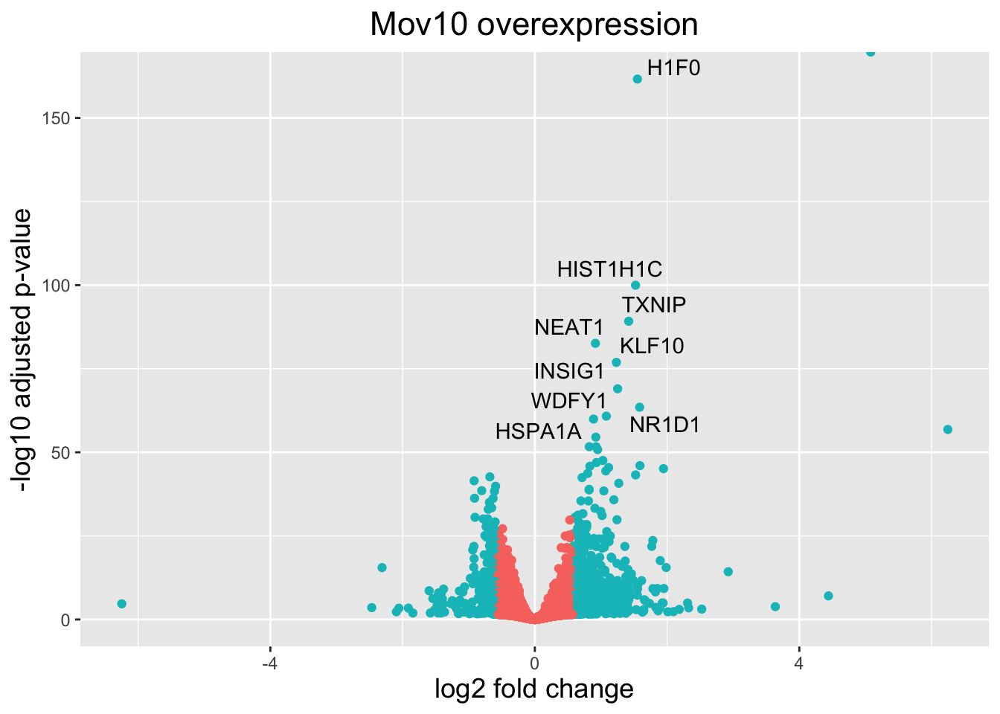
9.7 Summary of differential expression analysis workflow
.md file = 07-DGE_summarizing_workflow.md
We have detailed the various steps in a differential expression analysis workflow, providing theory with example code. To provide a more succinct reference for the code needed to run a DGE analysis, we have summarized the steps in an analysis below:
9.7.2 2. Exploratory data analysis (PCA & heirarchical clustering) - identifying outliers and sources of variation in the data:
9.7.3 3. Run DESeq2:
# **Optional step** - Re-create DESeq2 dataset if the design formula has changed after QC analysis in include other sources of variation
dds <- DESeqDataSetFromMatrix(countData = raw_counts, colData = metadata, design = ~ condition)
# Run DESeq2 differential expression analysis
dds <- DESeq(dds)
# **Optional step** - Output normalized counts to save as a file to access outside RStudio
normalized_counts <- counts(dds, normalized=TRUE)
write.table(normalized_counts, file="data/normalized_counts.txt", sep="\t", quote=F, col.names=NA)9.7.5 5. Create contrasts to perform Wald testing on the shrunken log2 foldchanges between specific conditions:
9.7.6 6. Output significant results:
### Set thresholds
padj.cutoff <- 0.05
lfc.cutoff <- 0.58 ## change in expression of 1.5
# Turn the results object into a data frame
res_df <- res %>%
data.frame() %>%
rownames_to_column(var="gene")
# Subset the significant results
sig_res <- dplyr::filter(res_df, padj < padj.cutoff & abs(log2FoldChange) > lfc.cutoff)9.7.8 8. Make sure to output the versions of all tools used in the DE analysis:
## R version 4.4.1 (2024-06-14)
## Platform: x86_64-apple-darwin20
## Running under: macOS Sonoma 14.6.1
##
## Matrix products: default
## BLAS: /System/Library/Frameworks/Accelerate.framework/Versions/A/Frameworks/vecLib.framework/Versions/A/libBLAS.dylib
## LAPACK: /Library/Frameworks/R.framework/Versions/4.4-x86_64/Resources/lib/libRlapack.dylib; LAPACK version 3.12.0
##
## locale:
## [1] en_US.UTF-8/en_US.UTF-8/en_US.UTF-8/C/en_US.UTF-8/en_US.UTF-8
##
## time zone: America/Vancouver
## tzcode source: internal
##
## attached base packages:
## [1] stats4 stats graphics grDevices utils datasets methods base
##
## other attached packages:
## [1] ggrepel_0.9.5 pheatmap_1.0.12
## [3] RColorBrewer_1.1-3 GOenrichment_0.5.0
## [5] igraph_2.0.3 DESeq2_1.44.0
## [7] SummarizedExperiment_1.34.0 MatrixGenerics_1.16.0
## [9] matrixStats_1.3.0 GenomicRanges_1.56.1
## [11] GenomeInfoDb_1.40.1 fgsea_1.30.0
## [13] enrichplot_1.24.2 lubridate_1.9.3
## [15] forcats_1.0.0 stringr_1.5.1
## [17] dplyr_1.1.4 purrr_1.0.2
## [19] readr_2.1.5 tidyr_1.3.1
## [21] tibble_3.2.1 ggplot2_3.5.1
## [23] tidyverse_2.0.0 clusterProfiler_4.12.3
## [25] org.Hs.eg.db_3.19.1 AnnotationDbi_1.66.0
## [27] IRanges_2.38.1 S4Vectors_0.42.1
## [29] Biobase_2.64.0 BiocGenerics_0.50.0
## [31] bookdown_0.40
##
## loaded via a namespace (and not attached):
## [1] rstudioapi_0.16.0 jsonlite_1.8.8 magrittr_2.0.3
## [4] farver_2.1.2 rmarkdown_2.28 fs_1.6.4
## [7] zlibbioc_1.50.0 vctrs_0.6.5 memoise_2.0.1
## [10] ggtree_3.12.0 S4Arrays_1.4.1 htmltools_0.5.8.1
## [13] SparseArray_1.4.8 gridGraphics_0.5-1 sass_0.4.9
## [16] bslib_0.8.0 htmlwidgets_1.6.4 plyr_1.8.9
## [19] httr2_1.0.2 cachem_1.1.0 lifecycle_1.0.4
## [22] pkgconfig_2.0.3 Matrix_1.7-0 R6_2.5.1
## [25] fastmap_1.2.0 gson_0.1.0 GenomeInfoDbData_1.2.12
## [28] numDeriv_2016.8-1.1 digest_0.6.37 aplot_0.2.3
## [31] ggnewscale_0.5.0 colorspace_2.1-1 patchwork_1.2.0
## [34] RSQLite_2.3.7 labeling_0.4.3 fansi_1.0.6
## [37] timechange_0.3.0 abind_1.4-5 httr_1.4.7
## [40] polyclip_1.10-7 compiler_4.4.1 bit64_4.0.5
## [43] withr_3.0.1 BiocParallel_1.38.0 viridis_0.6.5
## [46] DBI_1.2.3 highr_0.11 ggforce_0.4.2
## [49] MASS_7.3-61 DelayedArray_0.30.1 rappdirs_0.3.3
## [52] HDO.db_0.99.1 tools_4.4.1 ape_5.8
## [55] scatterpie_0.2.3 glue_1.7.0 nlme_3.1-166
## [58] GOSemSim_2.30.1 rsconnect_1.3.1 grid_4.4.1
## [61] shadowtext_0.1.4 reshape2_1.4.4 generics_0.1.3
## [64] gtable_0.3.5 tzdb_0.4.0 data.table_1.15.4
## [67] hms_1.1.3 tidygraph_1.3.1 utf8_1.2.4
## [70] XVector_0.44.0 pillar_1.9.0 emdbook_1.3.13
## [73] yulab.utils_0.1.6 splines_4.4.1 tweenr_2.0.3
## [76] treeio_1.28.0 lattice_0.22-6 bit_4.0.5
## [79] tidyselect_1.2.1 locfit_1.5-9.10 GO.db_3.19.1
## [82] Biostrings_2.72.1 knitr_1.48 gridExtra_2.3
## [85] xfun_0.47 graphlayouts_1.1.1 visNetwork_2.1.2
## [88] stringi_1.8.4 UCSC.utils_1.0.0 lazyeval_0.2.2
## [91] ggfun_0.1.5 yaml_2.3.10 evaluate_0.24.0
## [94] codetools_0.2-20 bbmle_1.0.25.1 ggraph_2.2.1
## [97] qvalue_2.36.0 ggplotify_0.1.2 cli_3.6.3
## [100] munsell_0.5.1 jquerylib_0.1.4 Rcpp_1.0.13
## [103] coda_0.19-4.1 png_0.1-8 bdsmatrix_1.3-7
## [106] parallel_4.4.1 blob_1.2.4 DOSE_3.30.2
## [109] mvtnorm_1.2-6 apeglm_1.26.1 viridisLite_0.4.2
## [112] tidytree_0.4.6 scales_1.3.0 crayon_1.5.3
## [115] rlang_1.1.4 cowplot_1.1.3 fastmatch_1.1-4
## [118] KEGGREST_1.44.1Exercise/Homework: modify this file to analyze the MOV dataset. Include a heatmap and a volcano plot
9.8 Functional analysis of RNA-seq data
.md file = 08-GO_enrichment_analysis.md
Functional analysis tools are useful in interpreting resulting DGE gene lists from RNAseq, and fall into three main types:
- Over-representation analysis
- Functional class scoring
- Pathway topology
9.8.1 Over-representation analysis
To determine whether any GO terms are over-represented in a significant gene list, the probability of the observed proportion of genes associated with a specific term is compared to the probability of the background set of genes belonging to the same term. This statistical test is known as the “hypergeometric test”.
We will be using clusterProfiler
9.8.2 clusterProfiler
# you may have to install some of these libraries; use
# BiocManager::install(c("org.Hs.eg.db","clusterProfiler","enrichplot","fgsea"))
library(org.Hs.eg.db)
library(clusterProfiler)
library(tidyverse)
library(enrichplot)
library(fgsea) 9.8.2.1 Running clusterProfiler
res_tableOE = readRDS("data/res_tableOE.rds")
res_tableOE_tb <- res_tableOE %>%
data.frame() %>%
rownames_to_column(var="gene") %>%
dplyr::filter(!is.na(log2FoldChange)) %>% as_tibble()To perform the over-representation analysis, we need a list of background genes and a list of significant genes. For our background dataset we will use all genes tested for differential expression (all genes in our results table). For our significant gene list we will use genes with p-adjusted values less than 0.05 (we could include a fold change threshold too if we have many DE genes).
## background set of ensgenes
allOE_genes <- res_tableOE_tb$gene
sigOE = dplyr::filter(res_tableOE_tb, padj < 0.05)
sigOE_genes = sigOE$geneNow we can perform the GO enrichment analysis and save the results:
## Run GO enrichment analysis
ego <- enrichGO(gene = sigOE_genes,
universe = allOE_genes,
keyType = "SYMBOL",
OrgDb = org.Hs.eg.db,
minGSSize = 20,
maxGSSize = 300,
ont = "BP",
pAdjustMethod = "BH",
qvalueCutoff = 0.05,
readable = TRUE)
## Output results from GO analysis to a table
cluster_summary <- data.frame(ego)
## make sure you have a results directory
write.csv(cluster_summary, "results/clusterProfiler_Mov10oe.csv")9.8.2.2 Visualizing clusterProfiler results
dotplot
The dotplot shows the number of genes associated with the first 50 terms (size) and the p-adjusted values for these terms (color). This plot displays the top 50 genes by gene ratio (# genes related to GO term / total number of sig genes), not p-adjusted value.
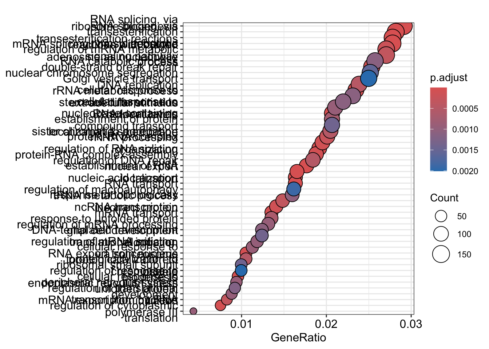 To save the figure, click on the Export button in the RStudio Plots tab and Save as PDF….set PDF size to 8 x 14 to give a figure of appropriate size for the text labels
enrichment GO plot
The next plot is the enrichment GO plot, which shows the relationship between the top 50 most significantly enriched GO terms (padj.), by grouping similar terms together. The color represents the p-values relative to the other displayed terms (brighter red is more significant) and the size of the terms represents the number of genes that are significant from our list.
This plot is useful because it serves to collapse the GO terms into functional categories by showing the overlap between GO terms.
## Enrichmap clusters the 50 most significant (by padj) GO terms to visualize relationships between terms
pwt <- pairwise_termsim(
ego,
method = "JC",
semData = NULL,
showCategory = 50
)
emapplot(pwt, showCategory = 50)## Warning: ggrepel: 10 unlabeled data points (too many overlaps). Consider increasing
## max.overlaps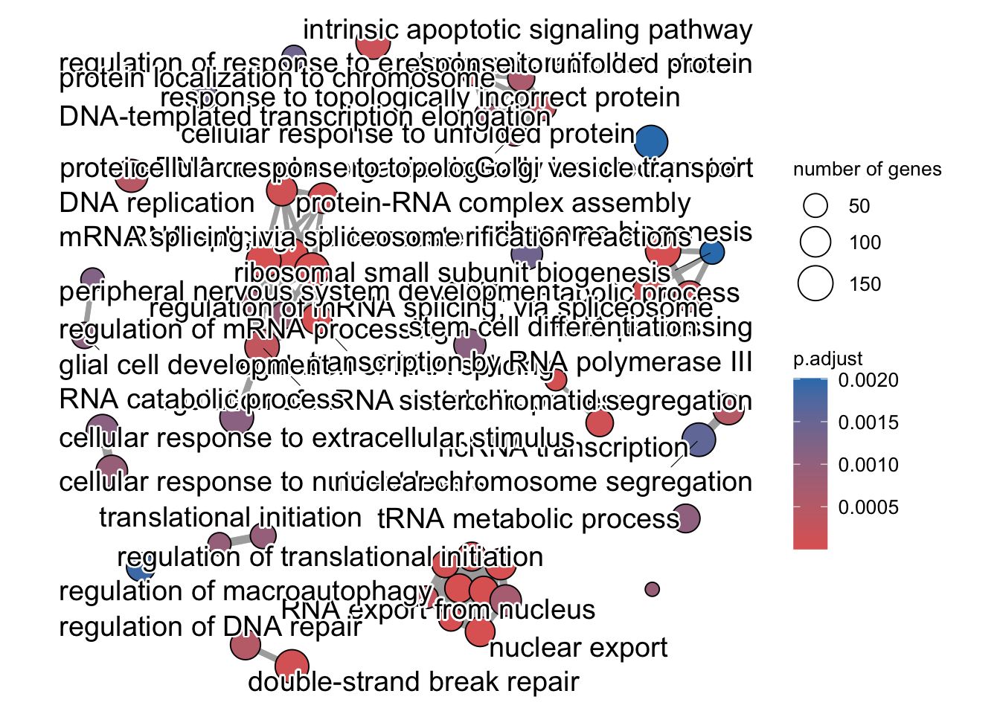
To save the figure, click on the Export button in the RStudio Plots tab and Save as PDF…. In the pop-up window, change the PDF size to 24 x 32 to give a figure of appropriate size for the text labels.
Finally, the category netplot shows the relationships between the genes associated with the top five most significant GO terms and the fold changes of the significant genes associated with these terms (color). The size of the GO terms reflects the pvalues of the terms, with the more significant terms being larger. This plot is particularly useful for hypothesis generation in identifying genes that may be important to several of the most affected processes.
netplot
## To color genes by log2 fold changes, we need to extract the log2 fold changes from our results table creating a named vector
OE_foldchanges <- sigOE$log2FoldChange
names(OE_foldchanges) <- sigOE$gene
## Cnetplot details the genes associated with one or more terms - by default gives the top 5 significant terms (by padj)
cnetplot(ego,
categorySize="pvalue",
showCategory = 5,
foldChange = OE_foldchanges,
vertex.label.font=6)## Warning in cnetplot.enrichResult(x, ...): Use 'color.params = list(foldChange = your_value)' instead of 'foldChange'.
## The foldChange parameter will be removed in the next version.## Warning: ggrepel: 436 unlabeled data points (too many overlaps). Consider
## increasing max.overlaps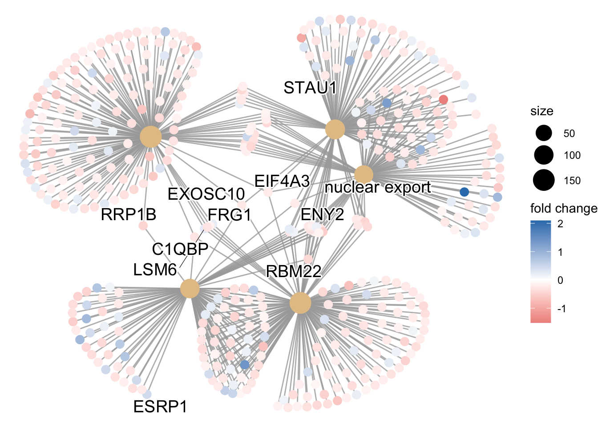
Again, to save the figure, click on the Export button in the RStudio Plots tab and Save as PDF…. Change the PDF size to 24 x 32 to give a figure of appropriate size for the text labels.
9.8.3 Gene set enrichment analysis (GSEA)
9.8.3.1 GSEA using clusterProfiler
GSEA uses the entire list of log2 fold changes from all genes. It is based on looking for enrichment of genesets among the large positive or negative fold changes. Thus, rather than setting an arbitrary threshold to identify ‘significant genes’, all genes are considered in the analysis. The gene-level statistics from the dataset are aggregated to generate a single pathway-level statistic and statistical significance of each pathway is reported.
Extract and name the fold changes:
## Extract the foldchanges
foldchanges <- res_tableOE_tb$log2FoldChange
## Name each fold change with the corresponding Entrez ID
names(foldchanges) <- res_tableOE_tb$geneNext we need to order the fold changes in decreasing order. To do this we’ll use the sort() function, which takes a vector as input. This is in contrast to Tidyverse’s arrange(), which requires a data frame.
## Sort fold changes in decreasing order
foldchanges <- sort(foldchanges, decreasing = TRUE)
head(foldchanges)## HSPA6 MOV10 ASCL1 HSPA7 SCRT1 SIGLEC14
## 6.246267 5.079630 4.441203 3.637040 2.925440 2.615129We can explore the enrichment of BP Gene Ontology terms using gene set enrichment analysis:
# GSEA using gene sets associated with BP Gene Ontology terms
gseaGO <- clusterProfiler::gseGO(
geneList = foldchanges,
ont = "BP",
keyType = "SYMBOL",
eps = 0,
minGSSize = 20,
maxGSSize = 300,
pAdjustMethod = "BH",
pvalueCutoff = 0.05,
verbose = TRUE,
OrgDb = "org.Hs.eg.db",
by = "fgsea"
)## using 'fgsea' for GSEA analysis, please cite Korotkevich et al (2019).## preparing geneSet collections...## GSEA analysis...## Warning in preparePathwaysAndStats(pathways, stats, minSize, maxSize, gseaParam, : There are ties in the preranked stats (8.07% of the list).
## The order of those tied genes will be arbitrary, which may produce unexpected results.## leading edge analysis...## done...## Warning: ggrepel: 84 unlabeled data points (too many overlaps). Consider increasing
## max.overlaps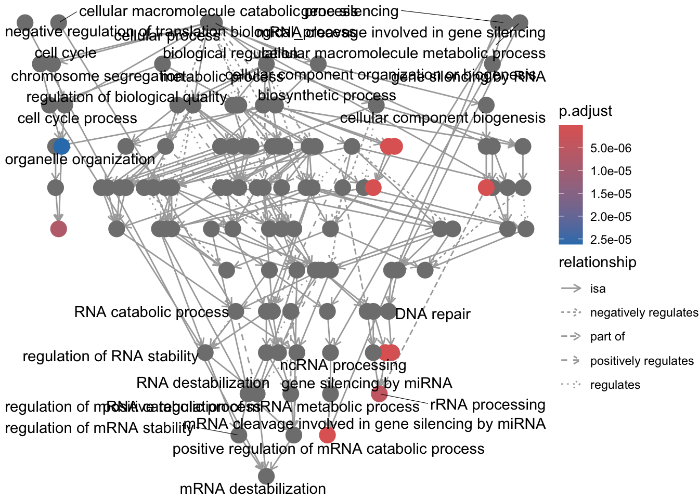
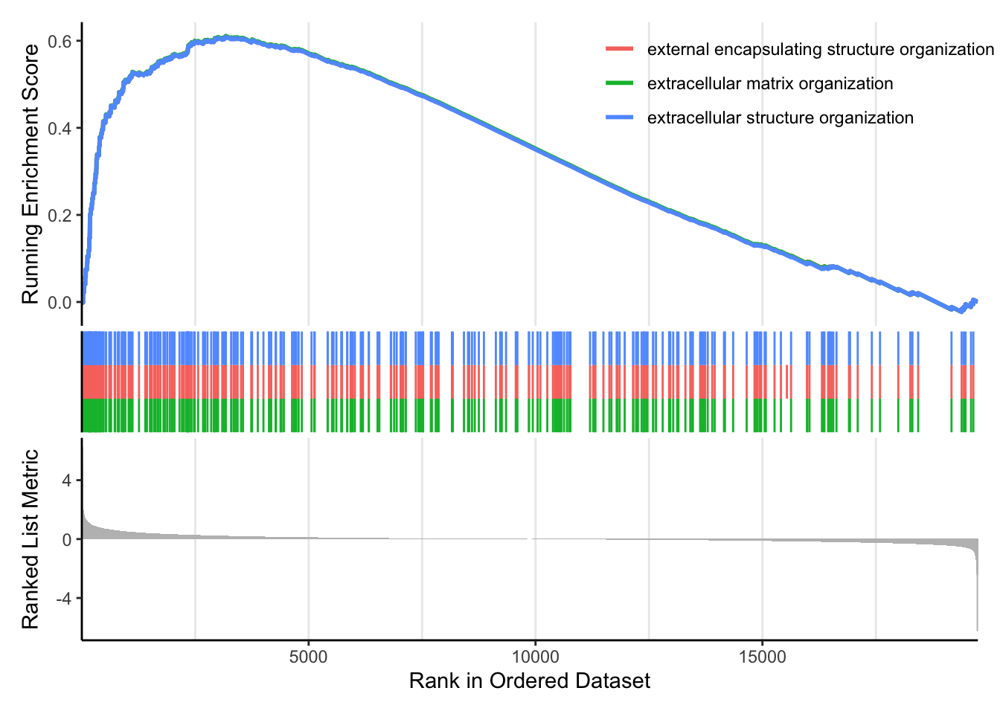
We can also use our homemade GO enrichment analysis. To do this we need to load the library GOenrichment:
# Uncomment the following if you haven't yet installed GOenrichment.
# devtools::install_github("gurinina/GOenrichment")
library(GOenrichment)
ls("package:GOenrichment")## [1] "compSCORE" "dfGOBP" "hGOBP.gmt" "hyperG" "runGORESP"
## [6] "runNetwork" "sampleFitdata" "visSetup" "yGOBP.gmt"One of the problems with GO enrichment analysis is that the GO annotations are in constant flux.
Here we can use the GO annotations in hGOBP.gmt (downloaded recently) to run GSEA using the fgsea package to run GSEA:
fgseaRes <- fgsea::fgseaSimple(pathways = hGOBP.gmt,stats=foldchanges,nperm=1000,maxSize = 300,minSize = 20)## Warning in preparePathwaysAndStats(pathways, stats, minSize, maxSize, gseaParam, : There are ties in the preranked stats (8.07% of the list).
## The order of those tied genes will be arbitrary, which may produce unexpected results.fgsea <- data.frame(fgseaRes,stringsAsFactors = F)
w = which(fgsea$ES > 0)
fposgsea <- fgsea[w,]
fposgsea <- fposgsea %>% arrange(padj)We are going to compare these results to runing the GO enrichment function runGORESP. runGORESP uses over-representation analysis to identify enriched GO terms, so we need to define a significance cutoff for the querySet.
## function (mat, coln, curr_exp = colnames(mat)[coln], sig = 1,
## fdrThresh = 0.2, bp_path = NULL, bp_input = NULL, go_path = NULL,
## go_input = NULL, minSetSize = 5, maxSetSize = 300)
## NULL?runGORESP
# we'll define our significance cutoff as 0.58, corresponding to 1.5x change.
# `runGORESP` requires a matrix, so we can turn foldchanges into a matrix using `cbind`:
matx <- cbind(foldchanges,foldchanges)
hresp = GOenrichment::runGORESP(fdrThresh = 0.2,mat=matx,
coln=1,curr_exp = colnames(matx)[1], sig = 0.58,
bp_input = hGOBP.gmt,go_input = NULL,minSetSize = 20,
maxSetSize = 300)
names(hresp$edgeMat)## [1] "source" "target" "overlapCoeff" "width" "label"## [1] "filename" "term" "nGenes"
## [4] "nQuery" "nOverlap" "querySetFraction"
## [7] "geneSetFraction" "foldEnrichment" "P"
## [10] "FDR" "overlapGenes" "maxOverlapGeneScore"
## [13] "cluster" "id" "size"
## [16] "formattedLabel"Let’s check the overlap between the enriched terms found using runGORESP and those found using fgseaSimple as they used the same GO term libraries:
w = which(fposgsea$padj <= 0.2)
lens <- length(intersect(fposgsea$pathway[w],hresp$enrichInfo$term))
length(w)## [1] 622## [1] 238 16## [1] 83.1932880%, that’s very good, especially because we are using two different GO enrichment methods, over-representation analysis and GSEA. The overlap between these enrichment and the ones using the other GO enrichment tools will be very small because of the differences in the GO annotation libraries.
Now to set up the results for viewing in a network, we use the function visSetup, which creates a set of nodes and edges in the network, where nodes are GO terms (node size proportional to FDR score) and edges represent the overlap between GO terms (proportional to edge width). This network analysis is based on Cytoscape, an open source bioinformatics software platform for visualizing molecular interaction networks.
## [1] "nodes" "edges"Now we use runNetwork to view the map:
This is one of the best visualizations available out of all the GO packages.
There are other gene sets available for GSEA analysis in clusterProfiler (Disease Ontology, Reactome pathways, etc.). In addition, it is possible to supply your own gene set GMT file, such as a GMT for MSigDB called c2.
** The C2 subcollection CGP: Chemical and genetic perturbations. Gene sets that represent expression signatures of genetic and chemical perturbations.**
9.8.4 Other tools and resources
GeneMANIA. GeneMANIA finds other genes that are related to a set of input genes, using a very large set of functional association data curated from the literature. Association data include protein and genetic interactions, pathways, co-expression, co-localization and protein domain similarity.
ReviGO. Revigo is an online GO enrichment tool that allows you to copy-paste your significant gene list and your background gene list. The output is a visualization of enriched GO terms in a hierarchical tree.
AmiGO. AmiGO is the current official web-based set of tools for searching and browsing the Gene Ontology database.
DAVID. The fold enrichment is defined as the ratio of the two proportions; one is the proportion of genes in your list belong to certain pathway, and the other is the proportion of genes in the background information (i.e., universe genes) that belong to that pathway.
etc.